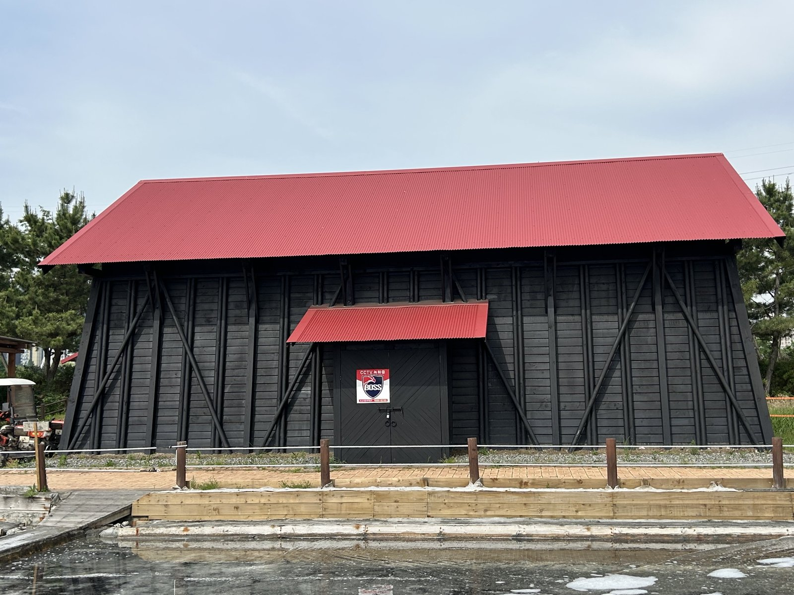

소래염전 천일염 7톤 김장 나눔…90년 소금창고 둔 염전, 국가도시공원 문턱에
3만5000㎡ 체험염전서 거둬 군·구 10곳에…올해 천일염 재고는 33% 많아
1937년 준공 때 소금창고 80동, 남은 건 소래·시흥 6동
옛 방식으로 거둔 소금 7톤, 김장 나눔에
AI경제저널=김갑봉 기자 | 인천시 인천대공원사업소는 2일부터 6일까지 소래염전생태공원에서 직접 생산한 천일염 7톤을 인천 10개 군·구에 보냈다고 6일 밝혔다. 군·구별 수요조사를 거쳐 나눴고, 연말 김장 나눔 행사 등을 거쳐 형편이 어려운 이웃에게 간다.
공원 안 약 3만5000㎡ 염전은 바닷물을 끌어들여 바람과 햇볕으로 물기를 날리는 옛 방식 그대로 소금을 거둔다. 시는 이 염전을 천일염 생산 과정을 보여 주는 생태학습장으로도 쓴다.

올해 김장철 천일염은 넉넉하다
올해 김장철 소금 사정은 넉넉한 편이다. 재정경제부가 3일 내놓은 김장재료 수급안정 대책을 보면 천일염 재고량은 1년 전보다 33.2% 많아, 정부는 공급 차질이 없을 것으로 내다봤다. 해양수산부는 29일까지 여는 수산대전 김장철 특별전 할인 품목에 천일염을 넣었다.
3년 전 사정은 달랐다. 해양수산부는 2023년 8월 천일염 방사능 검사를 국내 염전 837곳 전체로 넓혔고, 그해 10월에는 김장철을 앞두고 정부 비축 햇 천일염 1000톤을 시중가보다 50% 넘게 싸게 공급하겠다고 밝혔다. 837곳 가운데 대표 염전 150곳이 국산 천일염 생산량의 절반을 낸다.
소래염전이 내놓는 7톤은 시장을 움직일 양이 아니다. 그러나 90년 전 이곳은 국내 소금 증산 계획의 한복판이었다.
1937년 준공 때 소금창고 80동
인하대학교박물관 류창호가 2024년 학술지 「역사와 현실」에 낸 논문을 보면 소래염전은 1934년 6월 착공해 1937년 5월 준공했다. 조선총독부의 「제4기 천일염전 확장 계획」에 따른 것으로, 식용 소금 자급과 함께 화학공업 원료인 공업용 소금 증산을 겨냥했다.
바다보다 지반을 높인 고지식으로 지어 제방 비용을 줄였고, 염전에 처음 전기를 들였다. 소금창고는 80동이었으나 지금은 소래 쪽 4동과 시흥갯골생태공원 2동만 남았다. 인천시는 소래 쪽 창고 하나가 1936년 5월 지어져 국내에 남은 천일염전 소금창고 가운데 가장 오래됐다고 밝혔고, 옛 소금창고 3동은 올해 6월 시 등록문화유산이 됐다.
인천시는 1930년대 소래염전이 국내 염전의 60%를 차지했다고 설명한다. 그러나 염전이 컸다고 마을이 함께 큰 것은 아니다. 서울대학교 박정민(2024)은 1930년대 후반 경인지역이 군수공업지대로 개발될 때 소래면은 소외됐고, 각종 기반시설은 소사면과 부내면(부평)에 몰렸다고 분석했다.
국가도시공원 지정 신청 앞둬
염전 자리는 이제 공원 정책의 무대다. 2025년 8월 「도시공원 및 녹지 등에 관한 법률」이 바뀌어 국가도시공원 면적 요건이 300만㎡ 이상에서 100만㎡ 이상으로 낮아졌고, 국비는 보상비를 빼고 전부 또는 일부를 보조할 수 있게 됐다.
인천시는 소래습지생태공원 육지부와 장도포대지공원, 해오름공원 등 1단계 103만㎡를 하나의 공원으로 묶는 절차를 밟아 왔다. 시는 올해 4월, 법이 시행되는 8월 27일 이후 국토교통부에 지정 신청을 추진하겠다고 밝혔다. 지정되면 조성비와 관리·운영비 일부를 국비로 받을 수 있다.
공업용 소금 증산까지 겨냥해 지은 염전이 90년 뒤 이웃에게 김장 소금을 내는 학습장이 됐다. 그 땅을 나라가 함께 맡을지가 소래염전의 다음 장이다.
참고문헌
- 인천광역시 인천대공원사업소(2026.11.6). 「인천시, 소래염전 천일염 7톤 나눔으로 지역사회에 온기 전한다」(보도자료 원문 hwpx). https://www.incheon.go.kr/IC010205/view?repSeq=DOM_0000000015916662
- 인천광역시 문화유산과(2026.4.21). 「“100년 전 선교사의 헌신·90년 소금의 역사” 인천 근대유산 2건, 시 등록문화유산 된다」. https://www.incheon.go.kr/IC010205/view?repSeq=DOM_0000000014584039
- 인천광역시 공원조성과(2026.4.24). 「인천시, 국가도시공원 지정 속도 낸다」. https://www.incheon.go.kr/IC010205/view?repSeq=DOM_0000000014607204
- 인천광역시 공원조성과(2025.8.17). 「(기획) 국가도시공원의 시작, 소래습지에서 답을 찾다」. https://www.incheon.go.kr/IC010205/view?repSeq=DOM_0000000012905780
- 재정경제부 물가정책과(2026.11.3). 「10월 소비자물가 상승률 2.8% 기록, 역대 최대규모 김장대책(640억원) 시행, 동절기 농축수산물 수급 안정 위해 총력 대응」(별첨 김장재료 수급안정 대책). https://eiec.kdi.re.kr/policy/materialView.do?num=288982
- 해양수산부 유통정책과(2026.10.27). 「김장 재료부터 수산물까지 최대 50% 할인, 김장철 소비자 장바구니 부담 줄인다」. https://eiec.kdi.re.kr/policy/materialView.do?num=288574
- 해양수산부 유통정책과(2023.8.30). 「국내 염전 837곳 전수검사, 더욱 촘촘한 천일염 방사능 검사체계 구축」. https://eiec.kdi.re.kr/policy/materialView.do?num=242139
- 해양수산부 유통정책과(2023.10.20). 「김장철 대비 천일염 등 소금 수급 상황 점검」. https://eiec.kdi.re.kr/policy/materialView.do?num=243784
- 류창호(2024). 「소래염전 소금창고와 부속시설물을 통해 본 근대산업유산의 가치」. 『역사와 현실』 133, 15-56. https://www.kci.go.kr/kciportal/ci/sereArticleSearch/ciSereArtiView.kci?sereArticleSearchBean.artiId=ART003126731
- 박정민(2024). 「1920~30년대 후반 소래 지역의 성쇠와 지역사회의 대응」. 『인문논총』 81(3), 109-135. https://www.kci.go.kr/kciportal/ci/sereArticleSearch/ciSereArtiView.kci?sereArticleSearchBean.artiId=ART003117147
[사진 출처]
- [사진1] 인천광역시 보도자료 「인천시, 소래염전 천일염 7톤 나눔으로 지역사회에 온기 전한다」 붙임 사진(소금창고, 시 등록문화유산), 공공누리 출처표시, 2026.11.6., https://www.incheon.go.kr/IC010205/view?repSeq=DOM_0000000015916662
관련기사
- 수소버스 600대 도시 인천, 아시아 최대 수소 전시회에 공동관
- 바다에서도 내 어장 경계 확인…인천시 앱 '인천수산정보' 출시
- 인천 주민자치박람회 7일 월미도…주민자치회 법제화 뒤 첫 한마당
- 인천시 내년 예산 15조9천억…정부 이전재원이 자체수입 앞섰다
저작권자 © AI경제저널 무단전재 및 재배포, AI학습 및 활용 금지